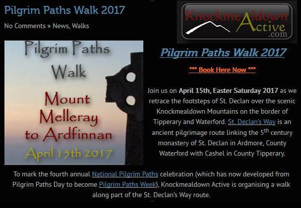

Dillon's Plan is: 10,000 steps per day and
1st Hike: Canon-Sheehan-loop.
Following glorious forest tracks, woodland paths and riverbank through Glenanaar Forest and along the banks of the Ogeen River with fine views of the Blackwater Valley and the Nagle and Knockmealdown Mountains. This should be about 2 hours walk with only a small height gain, a good one to start with. More Here
2nd Hike: Knockmealdownactive, Pilgrim Paths Walk 2017,
The Melleray to Ardfinnan walk is around 18km and should take about 3.5 to 4 hours to complete. It involves a gentle height ascension of 330 metres over the Knockmealdown Mountains. More Here
3rd Hike: Fauscoum
The highest point of the Comeragh Mountains and listed as #Fauscoum792m on the High Point Ireland Gribbon List. Out of the three hikes this will be the one with the greatest height gain and a good one to finish the challenge.
#livewell #restart